Free Poker Features
- Single player free poker game - Texas Holdem
- Master the odds of real Texas Holdem poker
- Compete against your own high score and watch your game improve
- Learn all five unique AI personalities - each with his / her own playing behavior
- Poker game is automatically saved as you play
Free Poker 247 - How to Play Free Poker
Texas Holdem Poker is among the world’s most popular card games. That’s because it involves luck, subterfuge, and guile to win, elegantly combining strategy with chance. The fact that players never know how a round will end makes the game even more alluring. No wonder millions of people play the game every day!
The following guide teaches you to play Texas Holdem Poker step-by-step. You’ll learn the basics, plus extra tactics you can deploy to improve your chances of winning.
Step-By-Step Texas Holdem Poker Guide
Texas Holdem Poker isn’t a game you can pick up in five minutes. That’s because there’s a lot to learn. You need to understand the betting structure, hand rankings, and order of play.
With that said, it should come naturally once you get the hang of it. Each round follows a similar pattern. The most challenging aspect of getting started is remembering the five-card hand rankings. The rest is pretty straightforward.
This section explains the elements of the game and how they contribute to your overall strategy. Learning the basics will enable you to get started, but as you keep running through rounds, you’ll naturally discover new tactics (within the rules) to outfox your opponents.
The Betting Structure
Betting is at the heart of Texas Holdem Poker. Players place chips on the table when they believe they may win a hand (or want to bluff an opponent into giving up on that particular round).
Texas Holdem Poker has four betting rounds. Here’s what you need to know:
1. Pre-flop
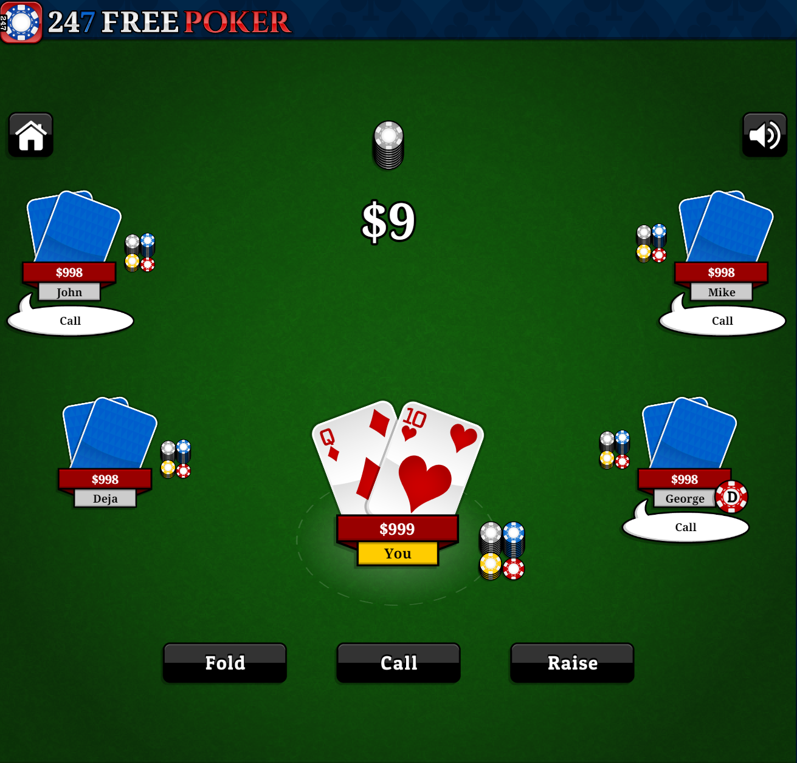
By tradition, the first betting round in Texas Holdem Poker is the pre-flop. Here, players place bets before the dealer deals cards.
Options include fold, call, and raise. Folding means players voluntarily eliminate themselves from the round before seeing more cards. Players might decide on this option if they believe they have a poor hand (or another player has a good one).
“Call” means that players match the existing bet for the round. “Raise” means that players add to the current wager.
The first player to the dealer’s left is the “small blind,” and the second is the “big blind.” Texas Holdem Poker uses the “blind” terminology to emphasize that these players must place bets without seeing any cards.
Texas Holdem Poker requires the “small blind” to place half the small bet limit at the table. The “big blind” must place a bet equal to this limit.
Players decide on the limits before the game begins. When betting at a casino, the house might decide what this betting limit is.
2. Flop
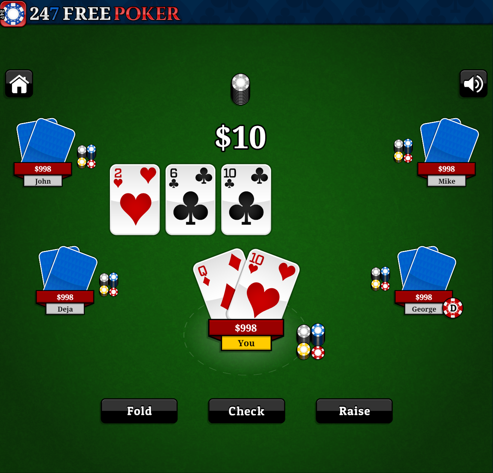
The “flop” refers to the first three community cards the dealer lays face-up on the table, taken from the top of the freshly shuffled pack and cut pack. Players compare the cards in their hands to those on the table to see if they can make good hands from them.
Following that is another round of betting where players can fold, call (check), or raise using chips or cash. If players believe they have a good hand or other players have bad ones, they may decide to raise their bets. Other players can then call or raise further.
If players believe they have a bad hand, they can fold and cut their losses. Players who fold must relinquish all chips bet in that round.
3. Turn
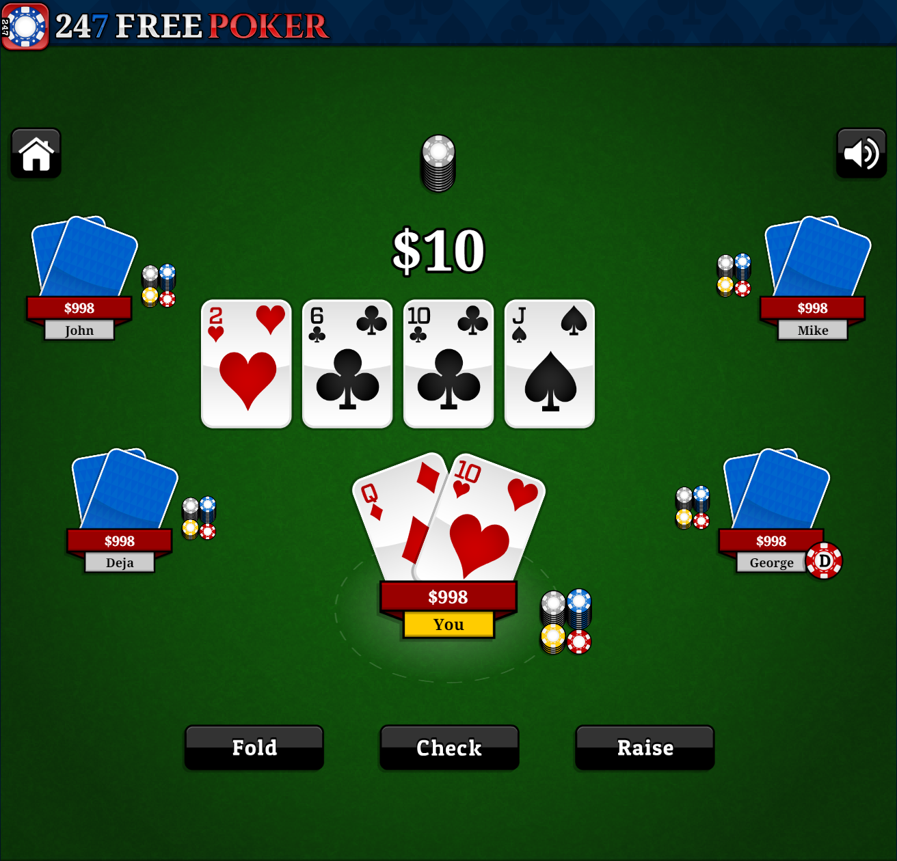
Texas Holdem Poker calls the fourth dealt community card the “turn.” Here, the dealer places another card from the pack beside the flop.
The additional card provides more opportunities for players to construct five-card winning hands. Players can attempt to make straights, flushes, and other combinations.
Once the turn occurs, players engage in another round of betting. The options are the same as in previous betting rounds: players can fold, call, or raise, starting with the “small blind” and moving left from the dealer’s position.
Again, players must weigh up whether to continue placing bets or fold. At this stage, players will also try to assess the behavior of other players to determine the quality of their hands, calling or raising to pressure opponents to fold or increase the stakes.
4. River
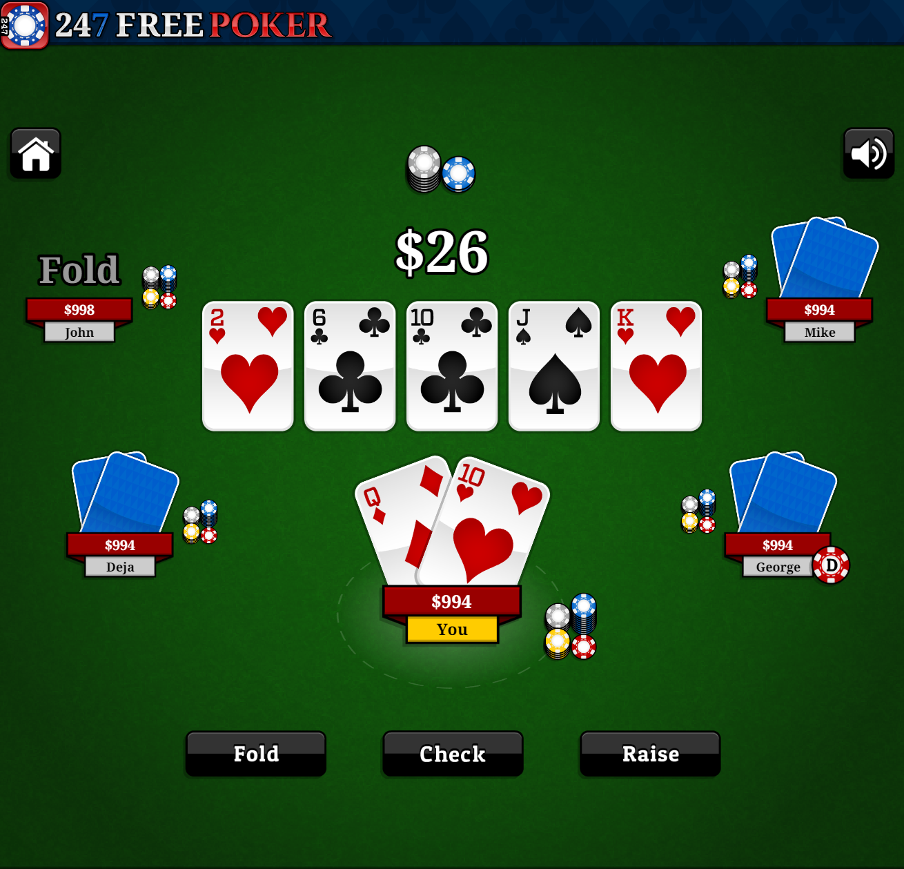
The fifth and final community card is the river. Dealers place this face up in the center of the table next to the other cards already presented.
Adding the final community card gives players another opportunity to create winning hands. Again, they can fold, call (check), or raise, depending on their perceived chances of winning the round.
In some cases, players may decide to go all-in. In other cases, one player may raise, and no one else will call, leading to the end of the round before any player reveals their cards.
Hand Rankings
In Texas Holdem Poker, players aim to construct the highest-ranking five-card sets from the five community cards and the two cards the dealer deals to each player at the start of the round.
The game ranks hands based on the rough probability of them occurring. Higher ranks are less probable but mean players who construct them are significantly more likely to win a round.
Here are the rankings from highest to lowest:
- Royal flush: An Ace, King, Queen, Jack, and ten in the same suit
- Straight flush: Five cards of the same suit in a sequence. For instance, the 6, 5, 4, 3, and 2 of hearts.
- Four of a kind: A hand of four cards of the same rank and any other card. For example, the queen of hearts, queen of diamonds, queen of spades, and queen of clubs.
- Full house: A hand consisting of three cards of one rank and two cards of another. For example, three jacks and two fours.
- Flush: A hand with five cards from the same suit. For example, the 3, 5, 7, 9, and King of Spades.
- Straight: A hand consistent of five cards in sequence from any suit. For example, the 2 of clubs, 3 of hearts, 4 of diamonds, 5 of spades, and 6 of clubs.
- Three of a kind: A hand consisting of three cards of the same rank and any other two cards
- Two pair: A hand comprising two pairs of cards of the same rank. For example, two kings and two aces.
- One pair: A hand with a single pair of cards of the same rank.
- High card: A hand that doesn’t fit into any of the above categories. The player with the highest-ranked card wins.
Playing A Round Of Poker: Example
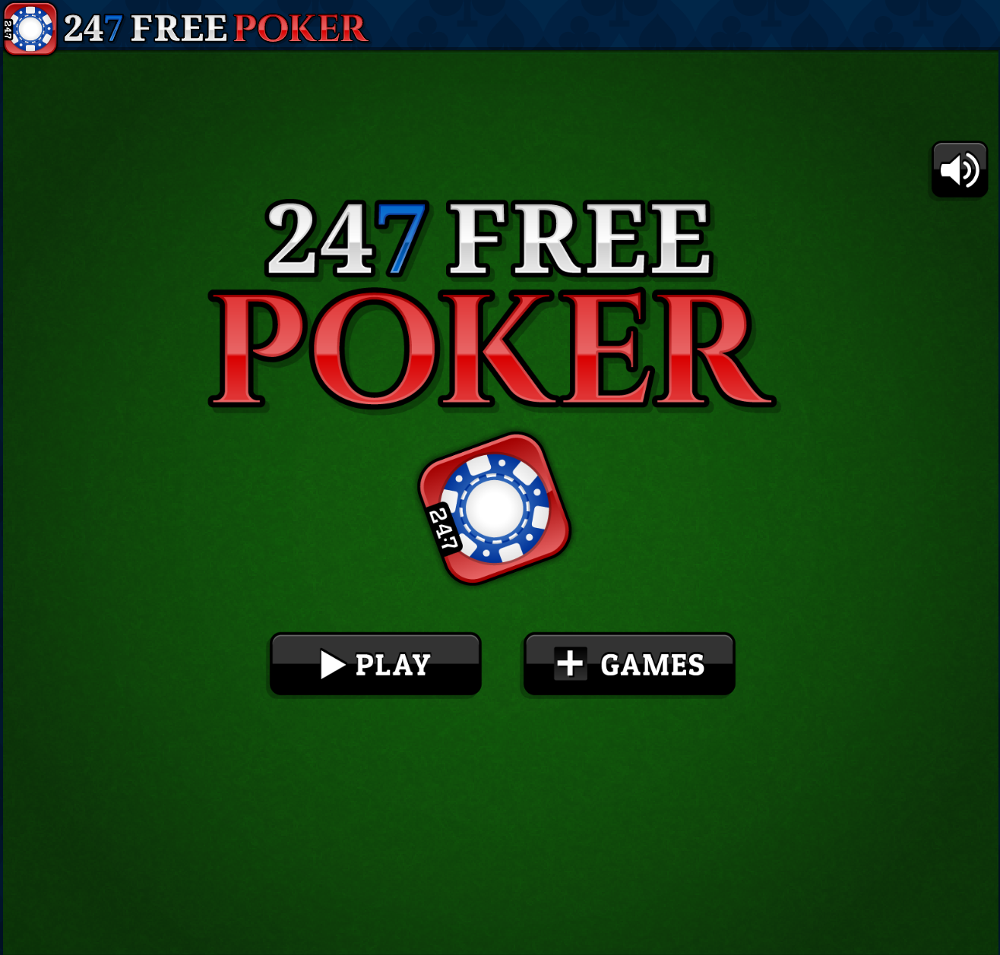
Now you understand betting, you are ready to play a round of poker. It’s a good idea to spend some time practicing first before placing any real bets. (A lot of players simply use physical or digital chips).
1. Deal Cards
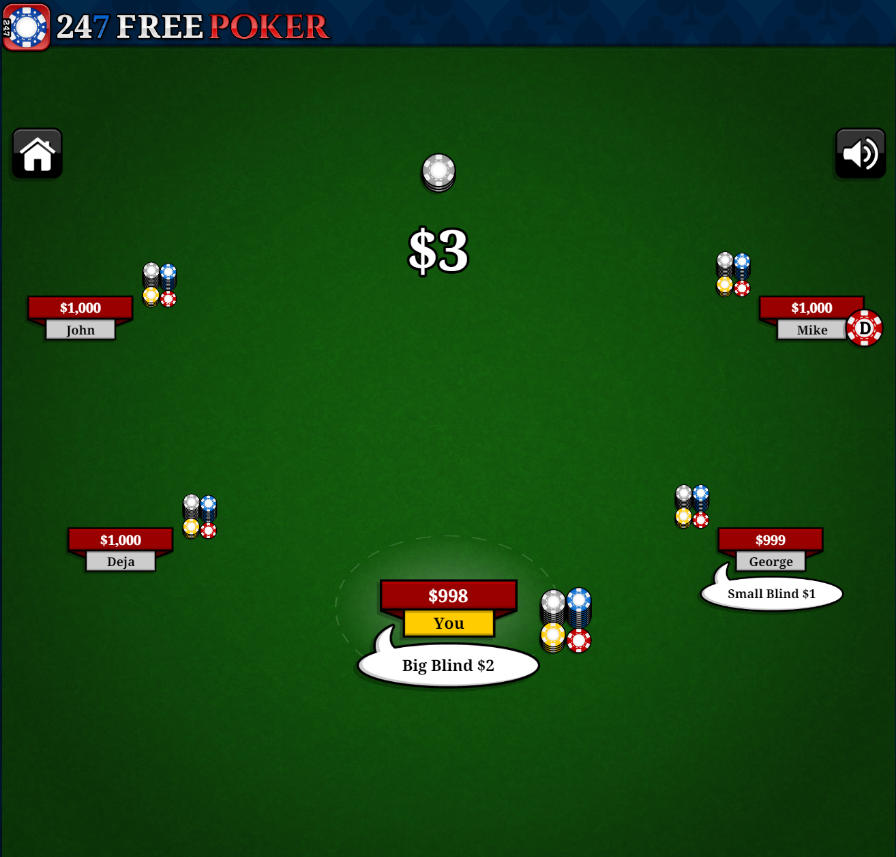
The game begins with the dealer dealing each player with two cards for their eyes only. (Revealing the cards would undermine the game because everyone would know each other’s hands).
Sometimes, the dealer can be an official representative (i.e., a casino employee). However, it is often just a player responsible for dealing cards at the end of each round. It can also be the computer if playing online!
In in-person Texas Holdem Poker, the dealer is always the last person to fold, call, or raise. Games usually represent them by the dealer button – a physical or digital token.
The dealer button passes to the player on the left after every round in in-person matches to keep games fair. However, in online poker, a random algorithmic dealing ensures fairness.
2. Assign Small and Big Blinds
The next step is to assign small and big blinds. These players must place an initial bet as described above. If they refuse, they must leave the game. (In online poker, the computer does this automatically).
3. Pre-flop Betting Begins
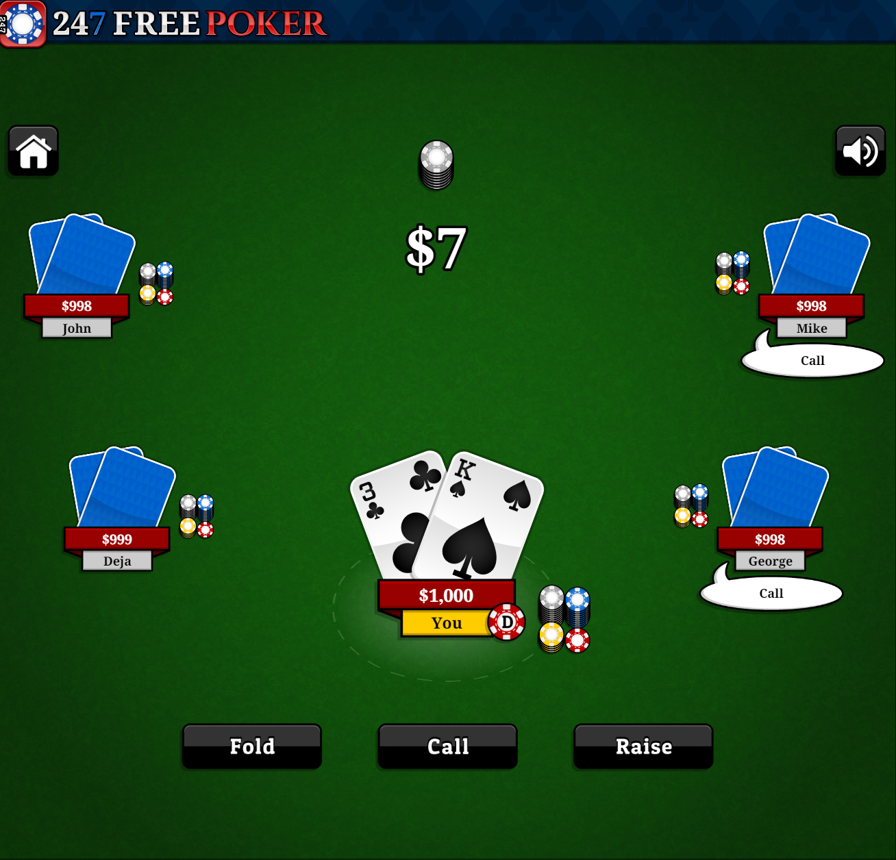
Then, players look at their cards and decide to fold, match existing bets, or raise them. Remember, at this stage, there are no cards on the table. However, players might predict they can make high-ranking five-card hands based on the two cards they already have. If that’s the case, they may raise the initial bets placed by the small and big blinds.
4. Flop
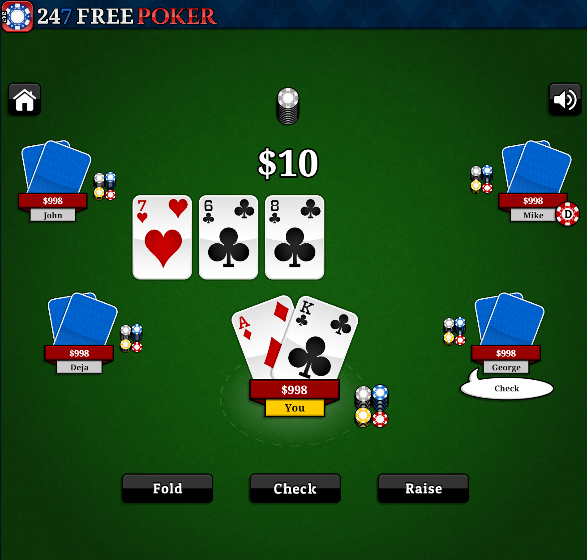
Once all players fold, call, or raise during pre-flop betting, the dealer deals the three flop cards face up on the table. Betting begins again, starting with the small blind and moving to the left. Each player can fold, call, or raise.
5. Turn
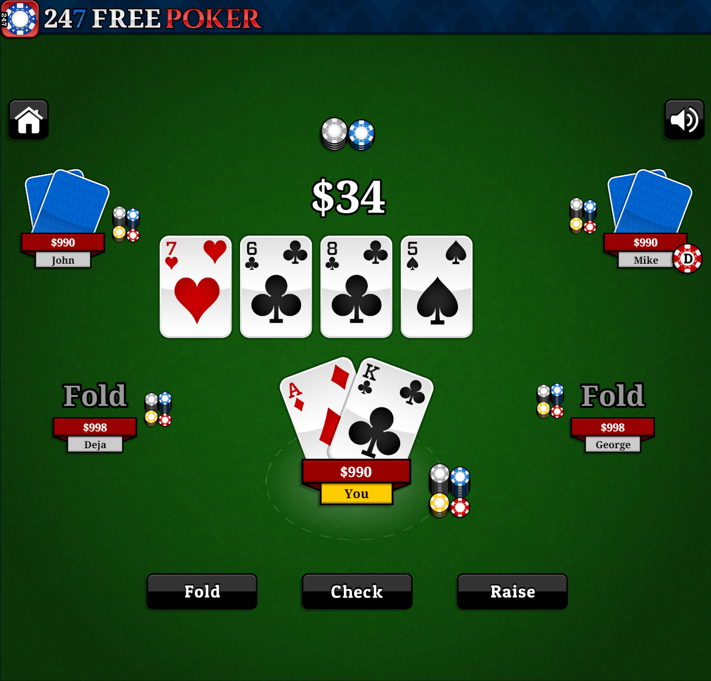
Once the betting finishes, the dealer places another card face-up on the table, and another betting round ensues.
6. River
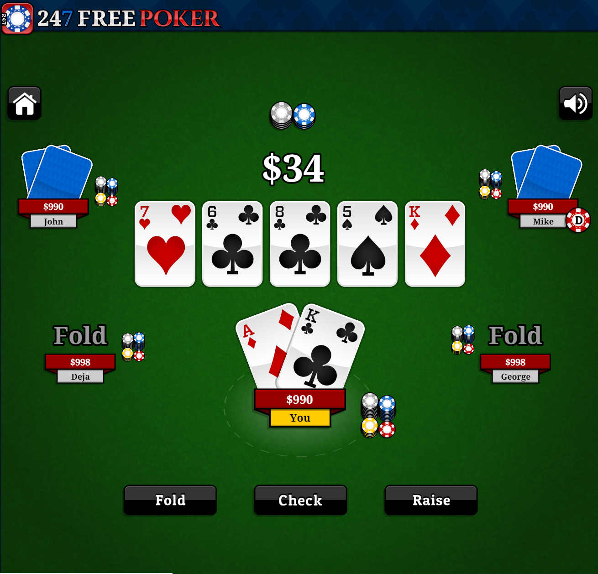
The dealer places the fifth and final community card face up on the table, and betting begins again, starting with the small blind immediately to the left of the dealer button.
7. Showdown
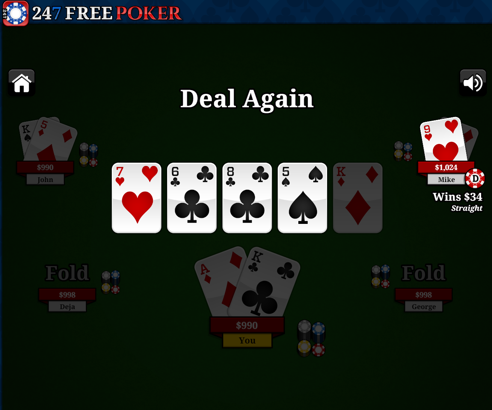
The showdown is the final stage of a round of poker. It only occurs if two or more players have active hands after the dealer places the last card. During this step, players must reveal their hands. The person with the highest-ranking five-card set wins.
Showdowns don’t occur during every round. If all players except one fold, the remaining player wins and takes all chips betted up to that point. However, they must happen if two or more players remain in the round.
Once players stop raising each other, the showdown occurs. Players must lay their cards on the table and can announce their five-card combination if they want, such as “straight flush.” Then, players agree on who won the round based on the card rankings described above.
How Does Texas Holdem Poker Differ From Other Types Of Poker?
Texas Holdem Poker is so popular today that it is often the only card game many people ever learn how to play. However, many different versions of the game exist.
The main difference between Texas Holdem and these other types of poker is hand size. In conventional forms of Poker, players start with five card hands and then make hands using the community cards. However, in Texas Holdem, you begin with just two. Players then have seven cards – five community cards and the two dealt cards – to make high-ranking combinations.
Another significant difference between conventional poker and Texas Holdem is that you are betting against other players, not the casino. (This might be why the game became so popular). In the regular version, the casino deals cards, and then players must construct hands, betting against a single entity. However, Texas Holdem forces players to consider multiple opposing hands, which requires a new set of calculations.
The number of betting rounds is also different in Texas Holdem. For example, there is an opening “ante” bet and two betting rounds in five-card draw poker. However, there are four betting rounds in Texas Holdem, including the pre-flop.
Finally, Texas Holdem differs from some other forms of poker by allowing no-limit betting. Players can go “all in” at any time, betting any remaining money or chips in a single round. Other forms of poker often have betting limits to prevent house losses.
Texas Holdem Poker Strategies
While the basic rules of Texas Holdem Poker are simple, they hide tremendous complexity. Advanced games can incorporate multiple strategies, including expected returns, probabilities, and bluffs. As such, the game might take you an hour to learn but years to master.
The trick to getting good at Texas Holdem Poker is to learn strategy. Understanding advanced principles increases the likelihood of winning the round (even if you don’t have a winning hand). Here are some of the tactics you could try:
Overbet On The River
The river is the final betting round in Texas Holdem. As such, it is when the most chips are on the table.
For risk-loving players, this is an opportunity. Players with poor hands sometimes perform an “overbet jam,” where they place a large bet on the table during the river, hoping all other players will fold. If they do, the high-bet player will receive all the chips, irrespective of their hand.
Players call this strategy bluffing. It occurs when a player thinks they will lose the round based on probability but goes ahead and places a high bet anyway. The genius of Texas Holdem Poker’s setup is that it forces other players to try to read their opponents to determine if they are bluffing.
Use “Backdoor Flush” To Bluff
Players wanting to bluff often use “backdoor flushes” in their strategy. A backdoor flush is a flush that might occur depending on the community cards drawn for the turn and river.
Texas Holdem strategists believe this hand is the best for bluffing because opponents are unlikely to call it out. Other players often believe the bluffer has a winning hand if the community cards indicate a flush is possible.
The genius of this strategy is that the person bluffing really could have a flush and be able to use it in a showdown. This fact makes the backdoor flush one of the most-loved tactical strategies.
Raise Immediately After The Flop
Another strategy some players use is check-raising after the flop. Players immediately to the left of the big blind will often place a large bet early in the round, attempting to get players with poor hands to fold. This strategy can often work as there is considerable uncertainty at the start of a round over the hands players can make. An exceptional hand is less likely when players must construct them from five cards instead of seven.
Suited Connectors Are Money Makers
When playing Texas Holdem, look for suited connectors in your two-card hand. Two non-sequential cards in the same suit can yield high-value hands, including straight and royal flushes.
For instance, the dealer might deal you the Jack and 9 of clubs. To make a straight flush, you need the community cards to contain the 10 of clubs and two of the following: the queen of clubs, the king of clubs, the 8 of clubs, and the 7 of clubs.
Now You Know How To Play Texas Holdem
As you continue playing Texas Holdem, you will discover multiple strategies that increase your likelihood of winning. However, you may also face more formidable and sophisticated opponents, making it challenging to know which strategy to adopt.
The best players keep experimenting and learning from their opponents. Learning all the probabilities can help, but there is considerable uncertainty. Knowing what to do in any situation and playing consistently over multiple rounds increases the likelihood of winning.
Free Poker News
Disclaimer
DISCLAIMER: The games on this website are using PLAY (fake) money. No payouts will be awarded, there are no "winnings", as all games represented by 247 Games LLC are free to play. Play strictly for fun.